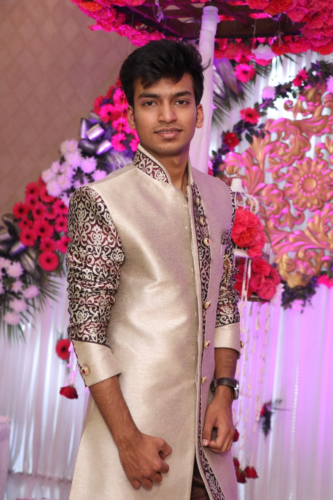

I am currently an Information Technology Undergraduate Student at Maharaja Agrasain Institute of Technology, Delhi , India and actively looking for Internship in Summer 2019. Prior to joining. I have some fascinating communacation skills and also a good public speaker quality. .Having a bit of experience in cryptocurrency MArket. I am too much into politics and religion stuff, currently i am leading BACE official society of MAIT,Rohini.i have organised an event of Asia's biggest motivation speaker ,Vivek Bindra conducted by the WAVE society of MAIT. I am also working in National level Marketing company ,Being Healthy as a marketer.Already worked as a crew member in Miss & Mr. Teen India 2017. I have 2 gold medals and 1 silver medal in state level Yoga competition Delhi. Feel free to contact me if you find me a good fit for your organization.